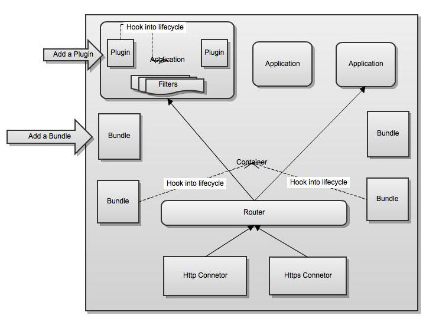

User Documentation
This document will provide you detailed information about the feature set of the minnal modules, configuring them, organizing your project, testing your application, extending minnal etc...
You should read through Getting Started to get an understanding of the framework capabilities.
High level design
The core of minnal is the container under which multiple applications are run. The notion of Container and Application might be confusing here. Unlike application servers like Tomcat, minnal doesn't create a classloader per application deployed. The figure below shows the high level design of the framework
At the low level is the container that defines the http connector and handles the incming request via a router. The router resolves the route from the request and deligates the request to application which in turn delegates to a route handler. The request optionally will go through a set of filters before hitting the controller method.
The container allows bundles to hook into its life cyle. Bundles can provide custom functionality at container level and will have access to the container.
The application allows plugins to hook into its life cycle. Plugins can provide custom functionality at application level and will have access to all the resources and routes with in the application
Modules
This section explains in detail the usage of various modules offered by minnal.Minnal Core
minnal-core is the core of the framework and doesn't depend on any of the other minnal modules. minna-core is a light weight REST application framework and can be used independent of instrumentation module.Organizing your project
Minnal recommends you to use maven for managing your project and its dependencies. If you are starting from scratch, take a look at Minnal Generator for creating a project. A minnal project structure would look like this,
Container Configuration
Minnal's configuration follows a composite pattern. Routes inherit from a Resource, Resources inherit from an Application and Applications inherit from Container. Minnal abstracts outa bunch of configuration parameters at container level and every component inherits them from their parent.
The configuration is loaded from a container.yml file loacated under META-INF/ folder in the classpath
# The name of the container
name: My Container
# The base path to use for the routes from all the applications
basePath: /
# Http server configuration
server:
connectors:
- port: 8080
scheme: http
# The default http media type that this container would support. Can be overridden by applications
defaultMediaType: application/json
# The serializers to use for the supported media types
serializers:
application/json:
class: org.minnal.core.serializer.DefaultJsonSerializer
# The mount points for the applications
mounts:
com.shopping.cart.ShoppingCartApplication: /
Take a look at the class org.minnal.core.config.ContainerConfiguration for all the available properties
Configuring SSL
Enabling https is quite similar to http, just that ssl needs to be configured. Create a https connector and configure ssl,
# Http server configuration
server:
connectors:
- port: 8080
scheme: http
- port: 8443
scheme: https
ssl:
keyStoreFile: /Users/ganeshs/keystore.jks
keyStorePassword: password
keyPassword: secret
Take a look the class org.minnal.core.config.SSLConfiguration for all the available properties
Mounting applications to the container
To mount an application to the container, you will have add the application class to the SPI of org.minnal.core.Application. The container loads all the applications from the SPI file and mounts them as configured in the container.yml. Create a file org.minnal.core.Application under META-INF/services/ folder and the list of applications you want to add to the container,
com.example.shopping.cart.ShoppingCartApplication
Creating an Application
Application class is the entry point to your application. The application specific configurations are read from org.minna.core.config.ApplicationConfiguration class and you will have to extend it to create your application specific configuration
package com.example;
public class ExampleConfiguration extends ApplicationConfiguration {
}
You create an application by extending the class org.minnal.core.Application.
package com.example;
public class ExampleApplication extends Application<ExampleConfiguration> {
@Override
protected void defineRoutes() {
}
@Override
protected void defineResources() {
addResource(ExmapleResource.class);
}
@Override
protected void addFilters() {
}
@Override
protected void registerPlugins() {
}
}
Application Configuration
Application inherits the configuration parameters from container. For instance, if you haven't set any serialiers for json content type, it will get it from container. You can override it by explicitly specifying in the ApplicationConfiguration. Minnal looks for the application configuration under META-INF/ folder in the classpath. Be sure to name the file as lowercased application name. For instance if your application class name is ShoppingCartApplication, then the application config file name should be shoppingcart.yml. Bare minimum, the application config requires a name to be defined
# The name of the application
name: shopping_cart
Database Configuration
Minnal recommends you to use JPA in your persistence layer but the database configuration is generic enough to use any library in your peristence layer
db:
driverClass: com.mysql.jdbc.Driver
url: jdbc:mysql://localhost/facilities
username: root
providerProperties:
hibernate.ejb.naming_strategy: org.hibernate.cfg.ImprovedNamingStrategy
hibernate.show_sql: true
hibernate.format_sql: false
hibernate.current_session_context_class: thread
hibernate.dialect: org.hibernate.dialect.MySQLDialect
packagesToScan:
- com.ekl.facilities
- org.minnal.security.session
- org.minnal.security.auth.cas
Minnal uses c3p0 for connection pooling. Take a look at the class org.minnal.core.config.ApplicationConfiguration for all the available properties
Creating a Resource
Creating a resource is straight forward. Unlike Application, resource class need not extend any framework specific classes. You create a resource undercom.example.resources package.
package com.example.resources;
public class ExampleResource {
/**
* Maps to the route GET /examples/:id
*/
public void readExample(Request request, Response response) {
String id = request.getHeader("id");
Example example = null;
// Read example from your persistence store
response.setContent(example);
response.setStatus(HttpResponseStatus.OK);
}
/**
* Maps to the route POST /examples/
*/
public Example createExample(Request request, Response response) {
Example example = request.getContentAs(Example.class)
// Write example to your persistence store
return example;
}
}
The only constraint the framework imposes on you is on the method signature of your resource methods. Your resource methods should take in an instance of org.minnal.core.Request and org.minnal.core.Resposne. The method can return void or the content to set in the response. In case you return the content from the method, minnal will set the content and set the status to 200 OK. It will safely ignore the return value if the resposne content is already set.
Minnals writes all the query and form parameters to request headers and you can access them by calling request.getHeader("param")
The resource should be added to your Application to define the routes. You do this by adding the resource in the defineResources() method of the application class
public class ExampleApplication extends Application<ExampleConfiguration> {
@Override
protected void defineResources() {
addResource(ExmapleResource.class);
}
}
Resource configuration
By default minnal inherits the application configuration parameters in to the resource configuration. In most cases you won't have a need to customize these properties. But say if you want to accept the text/csv which is not the default content type specified by the application, you can customize the resource configuration by just pass on an instance of resource configuration to addResource method.
@Override
protected void defineResources() {
ResourceConfiguration configuration = new ResourceConfiguration("example resource");
configuration.addSerializer(MediaType.CSV_UTF_8, csvSerializer);
addResource(ExmapleResource.class, configuration);
}
Take a look at the class org.minnal.core.config.ResourceConfiguration for all the available properties
Creating the routes
Routes are associated with resource classes. You add routes in the defineRoutes() method of the application class
public class ExampleApplication extends Application<ExampleConfiguration> {
@Override
protected void defineRoutes() {
// Map ExampleResource.readExample method to the route GET /examples/{id}
resource(ExampleResource.class).builder("/examples/{id}").action(HttpMethod.GET, "readExample");
// You can also chain the actions for a route
resource(ExampleResource.class).builder("/examples/{id}").action(HttpMethod.PUT, "updateExample").action(HttpMethod.DELETE, "deleteExample");
}
}
Route Configuration
By default minnal inherits the resource configuration parameters in to the route configuration. You can customize the route configuration as below,
@Override
protected void defineRoutes() {
RouteConfiguration configuration = new RouteConfiguration("some name");
configuration.addSerializer(MediaType.CSV_UTF_8, csvSerializer);
// Map ExampleResource.readExample method to the route GET /examples/{id}
resource(ExampleResource.class).builder("/examples/{id}").action(HttpMethod.GET, "readExample").using(configuration);
}
Take a look at the class org.minnal.core.config.RouteConfiguration for all the available properties
Creating a filter
Minnal provides support for chaining of filters like in http-servlets. The request will pass through all the filters before hitting the controller. To create a filter, implement the interface org.minnal.core.Filter
public class MyFilter implements Filter {
@Override
public void doFilter(Request request, Response response, FilterChain chain) {
// pre process request
chain.doFilter(request, response);
// post process response
}
}
Adding a filter to the application
You can add filters to the application in the addFilters() method
public class ExampleApplication extends Application<ExampleConfiguration> {
@Override
protected void addFilters() {
addFilter(new MyFilter());
}
}
Handling exceptions
Minnal defines a bunch of application exceptions that gets translated to meaningful HTTP response codes. These exceptions are defined under the package org.minnal.core.server.exception. Below are some of them, take a look at the exception package for other exception types
BadRequestException:-- 400 Bad RequestConflictException:-- 409 ConflictMethodNotAllowedException:-- 405 Method Not Allowed
Mapping Exceptions
You can map your exceptions to an application exception. You have to override the method mapExceptions() in the application class to do this
public class ExampleApplication extends Application<ExampleConfiguration> {
@Override
protected void mapExceptions() {
addExceptionMapping(PersistenceException.class, BadRequestException.class);
super.mapExceptions();
}
}
Creating a plugin
Plugin hooks into the lifecycle of an application. Minnal invokes the plugin when an application is intialized or destroyed. Creating a plugin is fairly simple, you will just have to implement the interface org.minnal.core.Plugin
public class MyPlugin implements Plugin {
@Override
public void init(Application application) {
System.out.println("Initializing the plugin");
}
@Override
public void destroy() {
System.out.println("Destroying the plugin");
}
}
Registering a plugin to the application
You can register a plugin in the registerPlugins() method of the application class
public class ExampleApplication extends Application<ExampleConfiguration> {
@Override
protected void registerPlugins() {
registerPlugin(new MyPlugin());
}
}
The registered plugins will be invoked in the same order they are registered
Creating a bundle
Bundles hook into the life cycle of the container. Bundle gets access to the container. The container invokes the bundle when the container is initialized, started, stopped. To cretae a bundle, simply implement the interface org.minnal.core.Bundle
public class MyBundle implements Bundle {
public void init(Container container) {
System.out.println("Intializing the bundle");
}
public void start() {
System.out.println("Starting the bundle");
}
public void stop() {
System.out.println("Stopping the bundle");
}
}
Adding a bundle to the container
To add a bundle to the container, you will have to add the bundle class to the SPI of org.minnal.core.Bundle under META-INF/ folder,
com.example.MyBundle
Minnal Jpa
minnal-jpa has useful abstractions for your DAL. It makes use of ActiveJpa, a java library that attempts to implement the active record pattern on top of JPA. It eliminates the need to create DAO or Repository classes and make programming DAL a lot more simpler. Minnal recommends using JPA for DB access and provides a JPA plugin module with ActiveJpa integration.Creating Domain Classes
Minnal Jpa provides a base domain class org.minnal.jpa.entity.BaseDomain which extends the ActiveJpa model class. Extending the base domain enables you to do ActiveRecord style operations like, Person.find(1L);, Person.where("firstName", "Ganesh"); etc...
package com.example.domain;
@Entity
public class Example extends BaseDomain {
}
Configuring JPA
minnal-jpa provides a plugin org.minnal.jpa.JPAPlugin to configure JPA. You just need to register the plugin to your application
public class ExampleApplication extends Application<ExampleConfiguration> {
@Override
protected void registerPlugins() {
registerPlugin(new JPAPlugin());
}
}
The JPAPlugin reads the database configuration from your application configuration and loads the EntityManagerFactory. You can configure the vendor specific properties in the db configuration section.